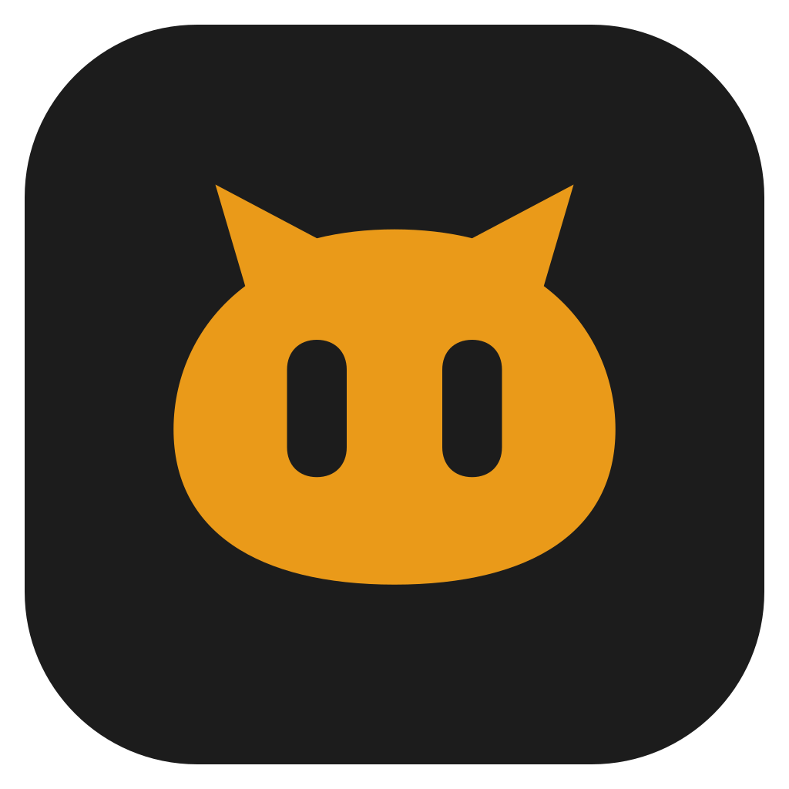

IDENTIDADE VISUAL / VERSÃO 1.0
Um pequeno detalhe.
Uma marca só nossa.
O porquinho mora no “o”. Um símbolo de cuidado com o dinheiro que faz parte do próprio nome. Simples, próximo e feito para durar.
ASSINATURA INVERSA
UMA COR / NARINAS VAZADAS
O SÍMBOLO / DO GRANDE AO PEQUENO

ÍCONE DO APLICATIVO01 / Cor
Calor, sem excesso.
Âmbar
#EA9A19Creme
#EDECE1Carvão
#1C1C1CÂmbar claro
#F7DCAEÂmbar nos símbolos e destaques. Carvão nos textos. Para texto pequeno em fundo claro, use um tom escuro, nunca âmbar puro.
02 / Tipografia
Conversa leve. Números precisos.
DM Sans
Interface, títulos e navegação.Seu dinheiro,
no seu ritmo.
Azeret Mono
Valores, tabelas e pequenos rótulos.R$ 12.450,00
0123456789
O nome na assinatura é um desenho vetorial próprio. Não pode ser substituído por texto nessas fontes.
03 / Aplicação
Espaço para a ideia aparecer.
- Preserve a proporção e as margens. Mínimos: assinatura 88 px; símbolo 20 px.
- Deixe ao redor da marca um espaço igual à altura do ponto do “i”. Para o símbolo, 1/4 da largura.
- Use a assinatura principal em fundos claros e a inversa em fundos escuros.
- Não acrescente olhos, boca, moedas, contorno, gradiente ou outros enfeites.
- Use os arquivos oficiais. Para modificar, altere a fonte vetorial e gere novamente os derivados.
04 / Arquivos finais